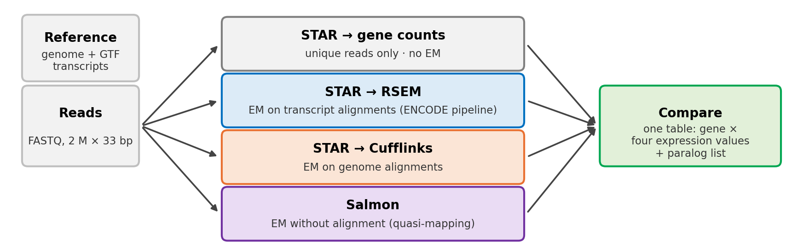
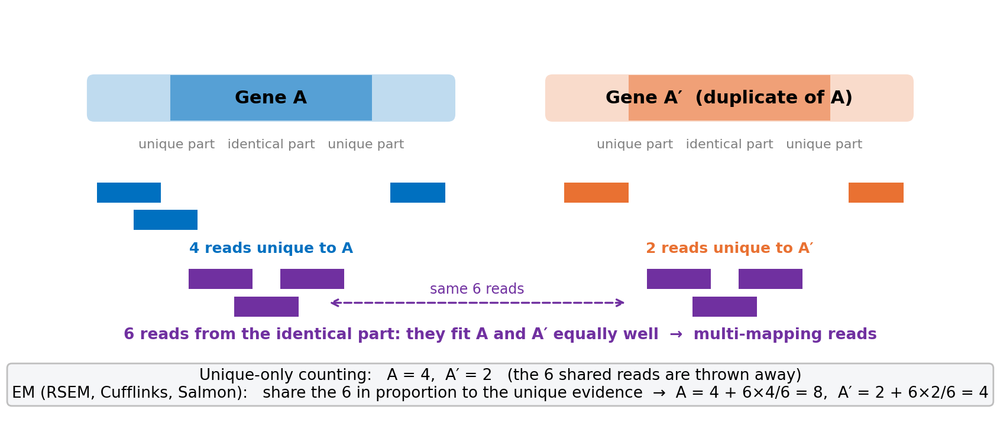

Lab 4 · RNA-seq data analysis
Wednesday Oct 28 · 1.5 hours · gene expression with STAR, RSEM, Cufflinks and Salmon in Google Colab (Galaxy as backup)
The question. Qian, Liao, Chang & Zhang (2010, Trends in Genetics) found that duplicate genes are expressed at lower levels than single-copy genes, and proposed that this is why duplicates are kept. Their yeast numbers came from RNA-seq reads that were counted only when they mapped to a unique place in the genome. Duplicate genes are similar to each other, so many of their reads map to both copies and are thrown away by that rule. Today you quantify the same yeast reads four ways, three of them with the EM algorithm from Lecture 7, and decide whether the conclusion depends on the tool. Part A runs the four tools in a Google Colab notebook (Run all, about 20 minutes; Galaxy is the backup). Part B, the comparison, is in the same notebook, and also on this page in Python or R using the instructor’s results. The handout (Word) explains every step and has the report questions. Report due Tuesday, Nov 3, 11:59 pm on Canvas.

| Part | What you do | Where | Time |
|---|---|---|---|
| A | Install the tools, download reads + reference, run STAR → RSEM, Cufflinks, Salmon | Colab notebook (Run all) | ≈ 20 min, all waiting: read A1 meanwhile |
| B | Join the four results with the duplicate-gene table; look at TEF1/TEF2; test the paper’s conclusion | same notebook (Python), or this page (Python or R) | ≈ 40 min |
The paper. Qian, Liao, Chang & Zhang 2010, Trends in Genetics 26: 425–430 (PDF) · Supplementary Methods (PDF) — read the first two pages and the Supplementary Methods paragraph on how the yeast expression levels were obtained.
Data. The reads are the real yeast RNA-seq reads Qian et al. used (Nagalakshmi et al. 2008, Science; run SRR002051, Illumina 2008, 33 bp, single-end), subsampled to 2 million. Reference: S. cerevisiae R64 genome, gene annotation and transcripts (Ensembl Fungi 63). Duplicate genes: Ensembl paralogues with the protein identity of the closest paralog.

Part A · Four quantifications in Colab
Open the Lab 4 notebook in Colab
File → Save a copy in Drive, then Runtime → Run all. While it runs (about 20 minutes), read the handout’s Section A1. The notebook:
| Step | Command (core) | What it does | Output you need |
|---|---|---|---|
| 1 | apt-get install rna-star rsem salmon cufflinks |
installs the four tools | versions |
| 2 | wget …/data/lab4/… |
reads (2 M × 33 bp), genome, GTF, transcripts, paralog table | — |
| 3 | STAR … --quantMode TranscriptomeSAM GeneCounts |
maps reads; unique reads per gene (no EM) + transcriptome BAM | star_Log.final.out, star_ReadsPerGene.out.tab |
| 4 | rsem-calculate-expression --alignments … |
EM on the transcriptome BAM (ENCODE pipeline) | rsem.genes.results |
| 5 | cufflinks -G genes.gtf … |
multi-reads split evenly, EM across isoforms | cufflinks/genes.fpkm_tracking |
| 6 | salmon quant -k 19 -g genes.gtf … |
k-mer quasi-mapping + EM | salmon/quant.genes.sf |
You should see in the STAR log: 2,000,000 input reads · uniquely mapped 51.3 % · multi-mapped 6.8 % (135,672 reads) · too many loci 2.0 % · unmapped (too short) 39.3 %. Salmon’s mapping rate is about 29 %.
Part B · Compare the four answers
The notebook already contains Exercises 1–5 in Python. The same analysis is here for R users, or if Colab is slow; it loads the instructor’s four result tables (same files, same settings as Part A) and the duplicate-gene table, and joins them into one table d with one row per gene.
Python
R
Exercise 1 · How many reads did each tool use? (5 min)
STAR’s table starts with four N_ rows: unmapped, multi-mapping, no feature (mapped outside any gene), ambiguous (inside two overlapping genes). Only uniquely mapped reads inside one gene are counted for genes. Add up what each tool assigned to genes.
Python
The row is called N_multimapping.
print("STAR, unique reads in genes:", int(d.STAR.sum())) # 681,891
print("RSEM, expected counts :", int(d.RSEM.sum())) # 726,466
print("Salmon, reads :", int(d.Salmon.sum())) # 584,107
print("multi-mapping reads STAR threw away:", int(special.loc[special.gene == "N_multimapping", "count"].iloc[0])) # 135,672R
The row is called N_multimapping.
cat("STAR, unique reads in genes:", sum(d$STAR), "\n") # 681,891
cat("RSEM, expected counts :", round(sum(d$RSEM)), "\n") # 726,466
cat("Salmon, reads :", round(sum(d$Salmon, na.rm = TRUE)), "\n") # 584,107
cat("multi-mapping reads STAR threw away:", special$count[special$gene == "N_multimapping"], "\n") # 135,672Exercise 2 · One duplicate pair: TEF1 and TEF2 (10 min)
TEF1 (YPR080W) and TEF2 (YBR118W) encode translation elongation factor 1α. Their proteins are 100 % identical and their coding sequences differ at only a handful of positions. Look them up in all four results, then do the same for TDH3/TDH2 (96 % identical) and ADH1/ADH2 (93 %).
Python
ADH2 is YMR303C (it is the closest_paralog listed for YOL086C).
cols = ["gene", "name", "closest_paralog", "min_pct_id", "STAR", "RSEM", "Cufflinks_FPKM", "Salmon"]
pairs = ["YPR080W", "YBR118W", "YGR192C", "YJR009C", "YOL086C", "YMR303C"]
print(d[d.gene.isin(pairs)][cols].round(1).to_string(index=False))
# TEF1: STAR 768 · RSEM 7,006 · Cufflinks 4,957 FPKM · Salmon 5,585 TEF2: 859 · 6,218 · 4,931 · 4,614
# TDH3: 9,111 · 15,613 · 11,719 TDH2: 2,637 · 4,891 · 3,490R
ADH2 is YMR303C (it is the closest_paralog listed for YOL086C).
cols <- c("gene", "name", "closest_paralog", "min_pct_id", "STAR", "RSEM", "Cufflinks_FPKM", "Salmon")
pairs <- c("YPR080W", "YBR118W", "YGR192C", "YJR009C", "YOL086C", "YMR303C")
print(d[d$gene %in% pairs, cols], row.names = FALSE, digits = 4)
# TEF1: STAR 768 · RSEM 7006 · Cufflinks 4957 FPKM · Salmon 5585 TEF2: 859 · 6218 · 4931 · 4614Exercise 3 · From one pair to all genes (15 min)
For every gene with at least 20 RSEM reads, compute the gain = RSEM count ÷ STAR unique count: how many times more reads EM gives than unique-only counting. Summarise it by how similar the gene is to its closest paralog.
Python
Count the genes whose gain is above 1.5 (EM gives at least 50 % more reads).
e = d[d.RSEM >= 20].copy()
e["gain"] = e.RSEM / e.STAR.clip(lower=1)
summary = e.groupby("identity", observed=True).gain.agg(
n="size", median="median", q75=lambda x: x.quantile(0.75),
share_over_1_5=lambda x: (x > 1.5).mean())
print(summary.round(2))
# no close paralog: n 3398, median 0.91, 5 % over 1.5 · 30-70 %: 0.92, 2 % · 70-95 %: 0.95, 11 % · 95-100 %: n 143, median 1.28, q75 3.4, 43 % over 1.5R
Count the genes whose gain is above 1.5 (EM gives at least 50 % more reads).
e <- d[d$RSEM >= 20, ]
e$gain <- e$RSEM / pmax(e$STAR, 1)
summary <- aggregate(gain ~ identity, e, function(x)
c(n = length(x), median = median(x), q75 = quantile(x, 0.75), share_over_1_5 = mean(x > 1.5)))
print(summary, digits = 3)
# 95-100 %: n 143, median 1.28, q75 3.4, 43 % over 1.5; all other groups: median ≈ 0.9, ≤ 11 % over 1.5Exercise 4 · The paper’s test, with and without EM (15 min)
Qian et al. compared the two copies together with the single ancestral gene and found that about 31 % more duplicate pairs than expected looked reduced. The ancestral gene is not in our data, but we can ask the question that matters: how much of a duplicate pair’s expression disappears when only unique reads are counted? For each pair, lost = 1 − (STAR₁ + STAR₂) / (RSEM₁ + RSEM₂).
Python
The paper’s excess was 31 %, so test x > 0.31.
# ... same code with (x > 0.31)
# <70 %: 1,124 pairs, median lost −0.09, 2 % over 31 % · 70-95 %: 90 pairs, −0.06, 12 % · 95-100 %: 70 pairs, median 0.19, 43 % over 31 %
# top: CUP1-1/CUP1-2, ASP3-1..4 (100 % identical, no unique reads at all: lost = 100 %), then EFT2/EFT1 89 %, TEF2/TEF1 88 %R
The paper’s excess was 31 %, so test x > 0.31.
# ... same code with mean(x > 0.31)
# 95-100 %: 70 pairs, median lost 0.19, 43 % of pairs lose more than 31 %; <70 %: 2 %Exercise 5 · Do the three EM tools agree? (10 min)
Plot RSEM against Salmon, and RSEM against STAR, on log axes, colouring the 95–100 % group.
Python
R
Report questions (5 points)
See the handout: Q1 read fate from the STAR log · Q2 your own Galaxy numbers for TEF1, TEF2 and TDH3 in all four tools, next to the page’s · Q3 why TEF1 gains 9× under EM but ADH1 does not · Q4 how EM decides how to share the reads (Lecture 7) · Q5 Qian’s pipeline and which of their duplicate pairs it could misjudge · Q6 does the conclusion survive? · Q7 what changes with 150-bp reads. Include your box plot (Ex 3) and one scatter (Ex 5).
Appendix · The same four quantifications in Galaxy (backup)
If Colab is unavailable, the same pipeline runs by clicking in Galaxy. Use usegalaxy.eu (it has RSEM; usegalaxy.org has the other three). Sign in, then make a new history (＋ in the history panel) called Lab 4. The settings below were checked on Oct 27 and give the same numbers as the notebook.
Upload → Paste/Fetch data, paste all four addresses (one per line), set Type as shown, click Start:
https://compbio-geb.github.io/DATA405_2026/data/lab4/yeast_reads_2M.fastq.gz
https://compbio-geb.github.io/DATA405_2026/data/lab4/yeast_genome_R64.fa
https://compbio-geb.github.io/DATA405_2026/data/lab4/yeast_genes_R64.gtf
https://compbio-geb.github.io/DATA405_2026/data/lab4/yeast_transcripts_R64.fa| File | Type to set | What it is |
|---|---|---|
| yeast_reads_2M.fastq.gz | fastqsanger.gz |
2,000,000 reads, 33 bp |
| yeast_genome_R64.fa | fasta |
16 chromosomes + mitochondrion (12 MB) |
| yeast_genes_R64.gtf | gtf |
7,127 genes, one transcript each (10 MB) |
| yeast_transcripts_R64.fa | fasta |
the 7,127 transcript sequences (9 MB) |
You should see: four green datasets (reads ≈ 73 MB).
Tool RNA STAR. Settings: single-end · reads = dataset 1 · Custom or built-in reference genome: Use reference genome from history · genome = dataset 2 · Length of the SA pre-indexing string: 10 · Build index with or without known splice junctions annotation: with gene-model · gene model = dataset 3 · Length of the genomic sequence around annotated junctions: 32 · Per gene/transcript output: Per gene read counts and transcriptome BAM (TranscriptomeSAM GeneCounts). Run.
You should see five outputs: log, splice junctions, mapped.bam, transcriptome-mapped.bam, reads per gene. Open the log: 2,000,000 input reads · uniquely mapped ≈ 51 % · multi-mapped ≈ 7 % · “too many loci” ≈ 2 % · unmapped ≈ 39 % (these 2008 reads have poor 3′ ends). ✏️ Write those four numbers down.
Tool RSEM calculate expression (version 1.3.3). Transcriptome alignments = STAR’s transcriptome-mapped.bam · Reference sequences: genome · Genome source: history → dataset 2 · Gene annotation = dataset 3 · Library layout: single. Run.
You should see: gene expression and isoform expression tables. Columns: gene_id, transcript_id(s), length, effective_length, expected_count, TPM, FPKM.
Tool Cufflinks. Input = STAR’s mapped.bam · Use Reference Annotation: Use reference annotation → dataset 3 · leave Use multi-read correct at No. Run.
You should see: gene expression (columns include tracking_id, gene_id, FPKM), transcript expression, and assembled transcripts.
Tool Salmon quant. Select a reference transcriptome from your history: dataset 4 · Kmer size: 19 · single-end · reads = dataset 1 · library type: U · File containing a mapping of transcripts to genes: dataset 3. Run.
You should see: gene quantification (Name, Length, EffectiveLength, TPM, NumReads) and transcript quantification. The log reports a mapping rate ≈ 30 %.
If uploads or jobs are slow on usegalaxy.eu, switch to usegalaxy.org (same steps; it has everything except RSEM — take the RSEM values from the page for Q2 and say so). If a job is stuck, continue with Part B: the page loads the instructor’s four results (same data, same settings). Finish Part A later and check three genes against the page (Q2).